Descubre cómo el sonido y la vibración dan forma a patrones geométricos increíbles. Un proyecto de investigación sobre las Figuras de Chladni y las ondas estacionarias.
Comenzar a ExplorarLas figuras de Chladni son patrones que se forman cuando una superficie vibra a ciertas frecuencias. La arena se acumula en las líneas nodales (donde no hay vibración), revelando la geometría del sonido.
Una onda es una perturbación que transporta energía sin transportar materia. Sus características principales son la amplitud, longitud de onda, frecuencia y velocidad de propagación. Se clasifican en mecánicas (como el sonido) y electromagnéticas (como la luz).
Son el resultado de la superposición de dos ondas de igual frecuencia y amplitud que viajan en sentidos opuestos. En ellas, el patrón no se desplaza, creando puntos fijos llamados nodos y antinodos.
Los nodos son zonas de vibración nula (donde la arena se acumula). Los antinodos son zonas de máxima vibración (donde la arena es expulsada). Esto permite visualizar la onda estacionaria.
Es el aumento de amplitud cuando una fuerza externa coincide con la frecuencia natural del sistema. En las placas de Chladni, al alcanzar la resonancia, se forman patrones geométricos definidos.
La arena se desplaza desde los antinodos (zonas de mayor movimiento) hacia los nodos (zonas de vibración nula), acumulándose en las líneas nodales y revelando la geometría del modo de vibración.
Explora nuestro proceso, el prototipo y los patrones que logramos capturar.
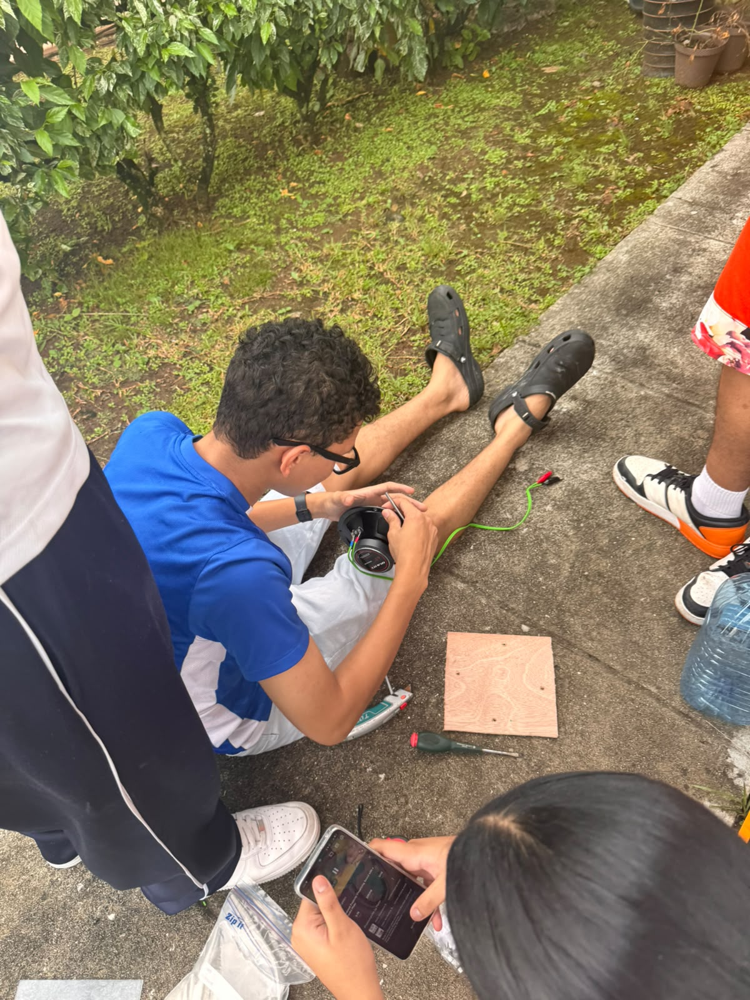
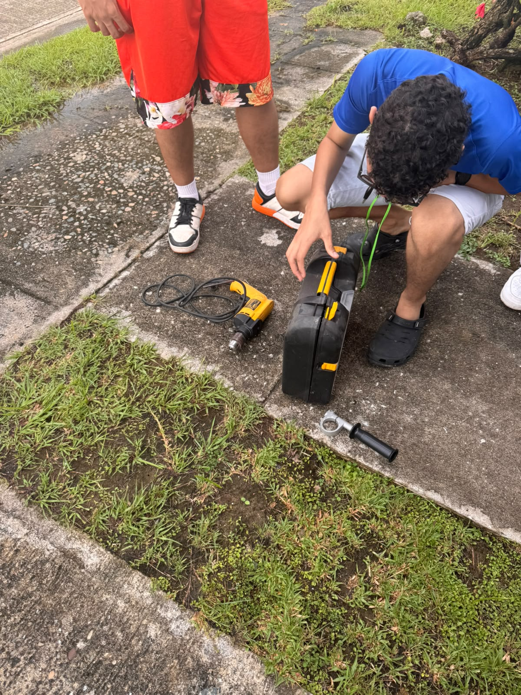
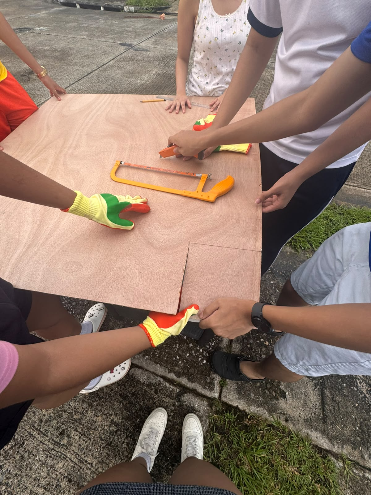
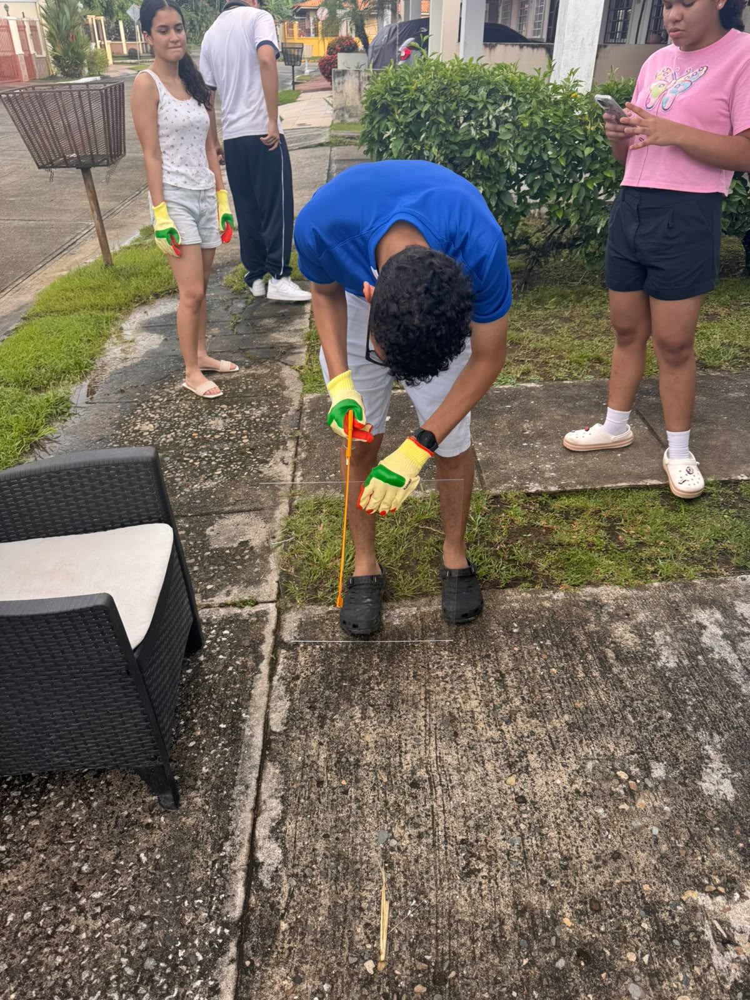
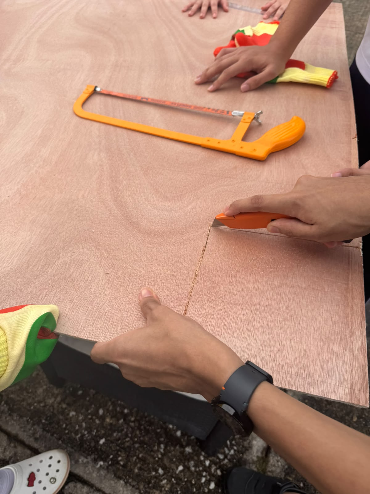
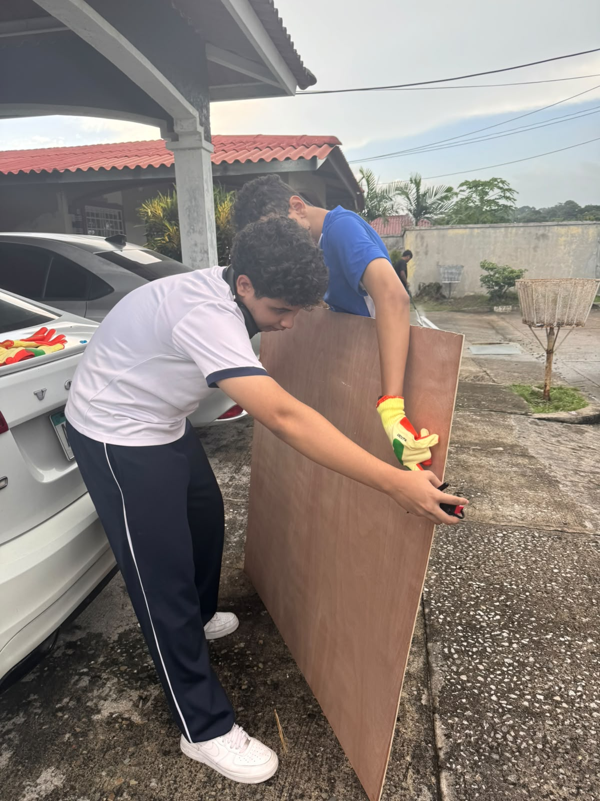
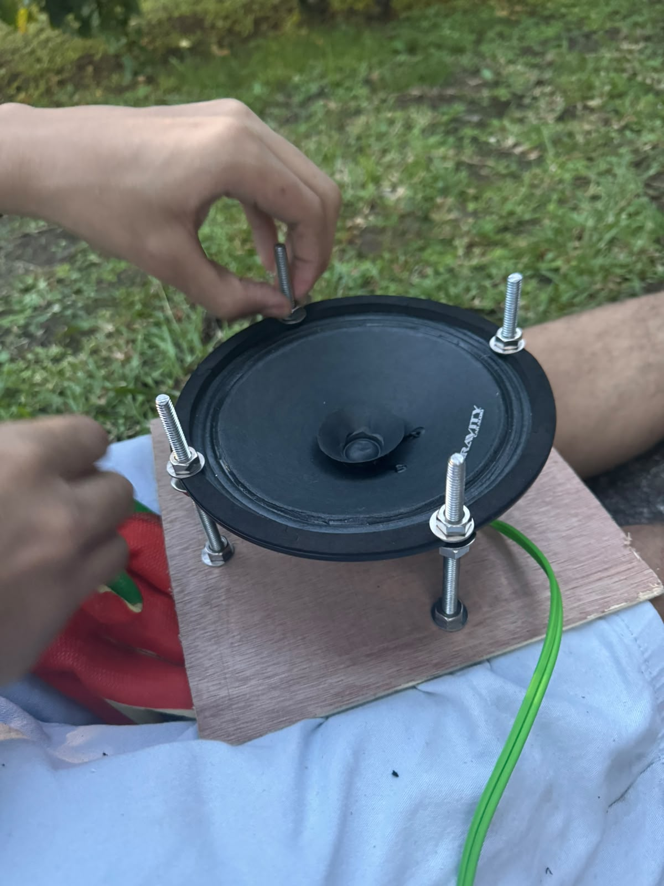
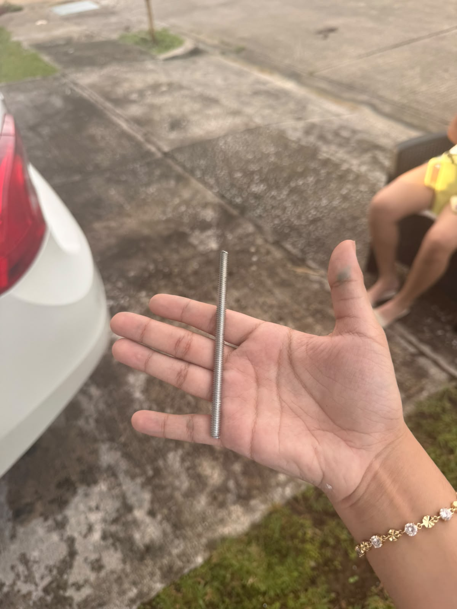
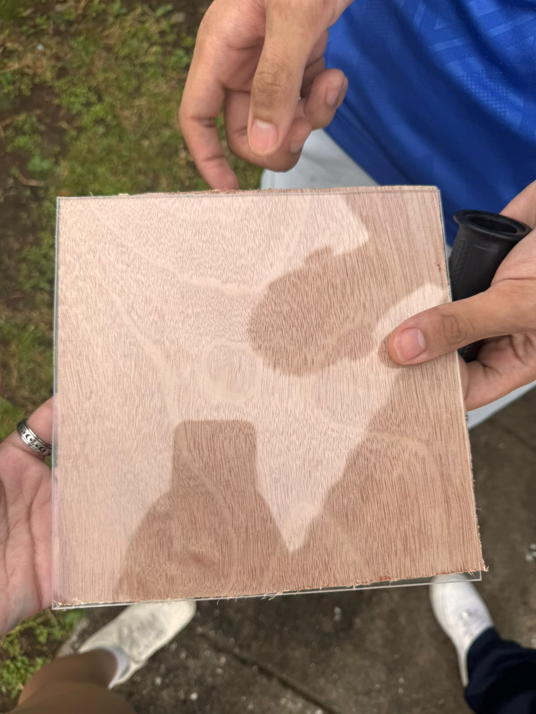
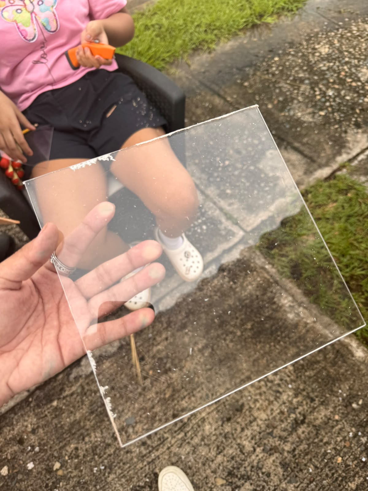
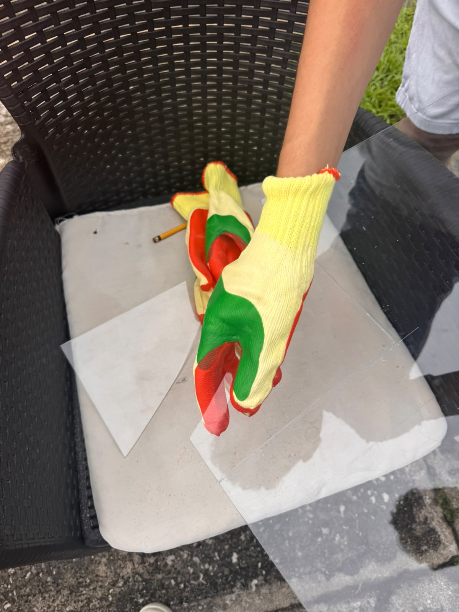
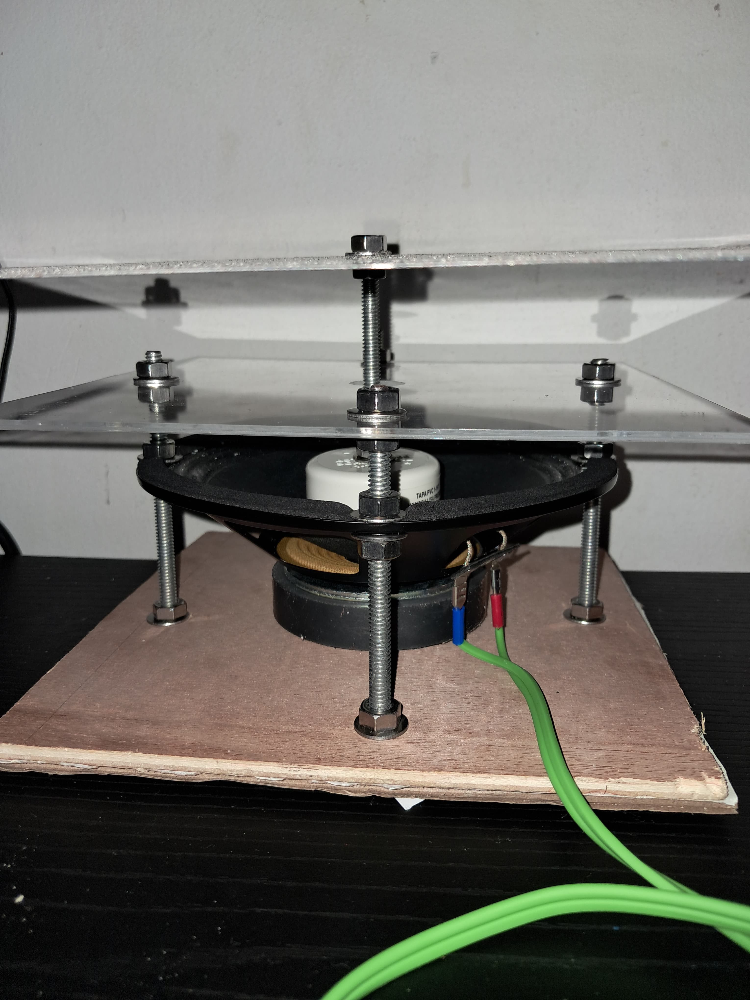
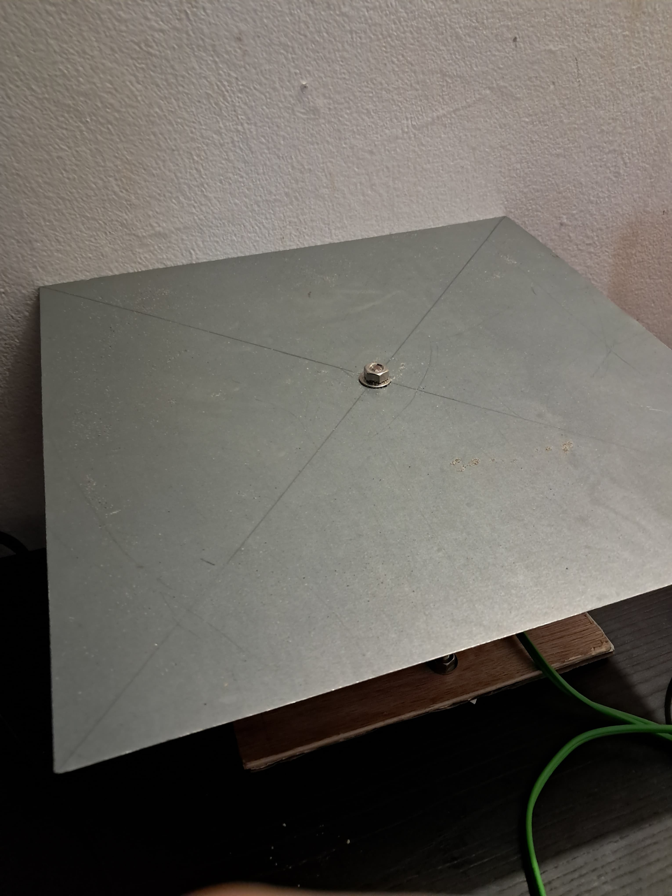
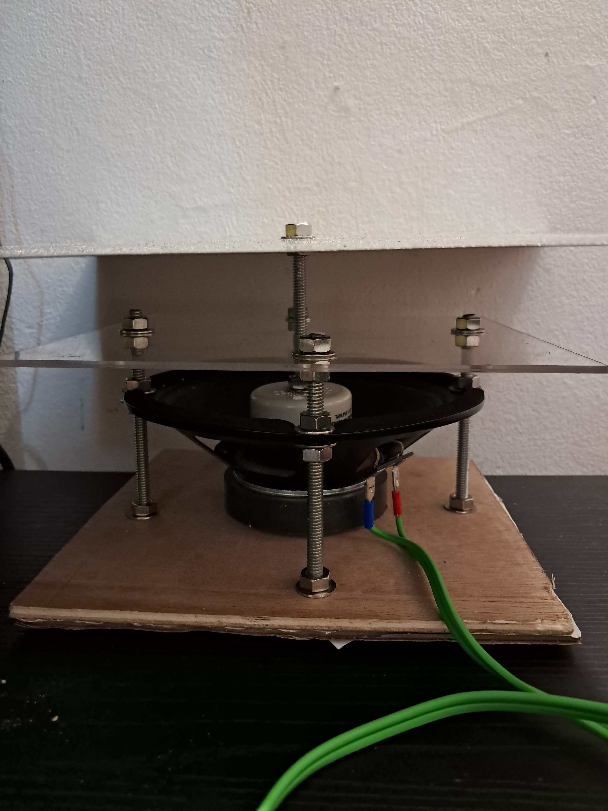
A partir de los resultados obtenidos, se analizó el comportamiento de las partículas de arena frente a las diferentes condiciones de vibración.
Los resultados evidenciaron que la modificación de la frecuencia produce cambios en la configuración de los patrones. Al variar la frecuencia, la placa puede responder mediante diferentes modos normales de vibración, cada uno con una distribución particular de nodos y antinodos.
La forma de los patrones está relacionada con la manera en que se distribuyen los nodos sobre la superficie. La arena permite identificar estas regiones porque se desplaza de las zonas de mayor amplitud hasta concentrarse en las líneas nodales.
El punto donde se aplica la fuerza influye en la cantidad de energía que recibe cada modo normal. En este caso, la fuente se encontraba ubicada en el centro de la placa, lo que favoreció la aparición de patrones con una distribución relativamente simétrica.
La frecuencia permite establecer qué modos de vibración pueden aparecer, mientras que la posición de excitación influye en cuáles de estos modos reciben mayor cantidad de energía. Sin embargo, predecir con exactitud la figura final resulta más complejo debido a las condiciones reales del sistema.
Proyecto: Influencia de la frecuencia de excitación en la formación de figuras de Chladni.